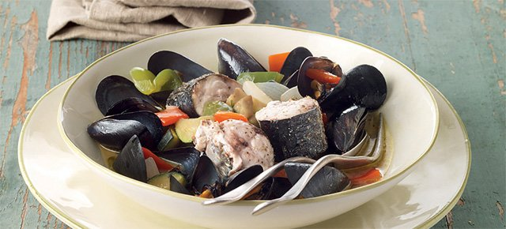

Chiama la polizia perché il piatto di cozze è troppo piccolo: denunciato
Il piatto di cozze che ha causato il misfatto
Cronaca
14/3/2018
di Giandomenico Fracchia
Un uomo è stato citato per uso improprio del 911 per aver chiamato due volte per lamentarsi delle dimensioni del suo ordine di molluschi. Il dipartimento di polizia di Stuart, in Florida, ha scritto in un post su Facebook che Nelson Agosto, 51 anni, ha chiamato il 911 da un ristorante ben due volte dopo avere ordinato e mangiato una cena di cozze al vapore. Il dipartimento ha condiviso l’audio di una delle chiamate, in cui Agosto si lamentava di non voler pagare il piatto che aveva consumato perché era “troppo piccolo”. Nell’audio si sente l’addetto ai servizi di emergenza chiedere ripetutamente ad Agosto di richiamare su una linea non di emergenza. Alla fine, data l’insistenza dell’uomo, un agente è stato inviato al ristorante come chiedeva Agosto, ma anziché aiutarlo a non pagare il piatto a suo dire inadeguato, è intervenuto per consegnarli un avviso di comparizione per l’uso improprio dei servizi di emergenza.Non è la prima volta che qualcuno chiama i servizi di emergenza per questioni futili come questa, nonostante sia noto che le sanzioni possono essere decisamente severe: probabilmente il problema è che alcuni hanno un’idea un po’ distorta del concetto di emergenza.